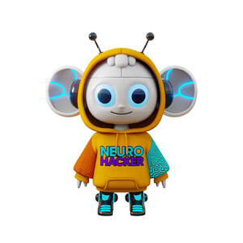

Trade Mark Journal No.2025/031 1 August 2025
UK00004236604 20 July 2025 (9,16,28)

- Class 9
- Podcasts; Downloadable podcasts; Videocasts; Downloadable videocasts; Audio tapes featuring music; Downloadable video recordings featuring music; Pre-recorded video tapes featuring music; Downloadable video recordings; Prerecorded audio tapes featuring music; Pre-recorded audio tapes featuring games; Pre-recorded audio cassettes featuring music; Audio recordings; Audio and video receivers; Audio books; Prerecorded video tapes featuring music; Video recordings; Prerecorded music audio tapes; Audio tapes; Pre-recorded video tapes featuring games; Pre-recorded audio tapes; Downloadable video game programs; Digital music [downloadable] provided from mp3 web sites on the internet; Video game cassettes; Downloadable video game software; Downloadable videos; Video films; Video game programs; Video game discs; Interactive video game programs; Downloadable video files; Animated cartoons; Cartoons (Animated -); Animated films; Downloadable animated cartoons; Animated cartoons in the form of cinematographic films; Video disks with recorded animated cartoons; Video tapes with recorded animated cartoons; Prerecorded video cassettes featuring animated fictional stories; Computer programmes for interactive television and for interactive games and/or quizzes; Downloadable films; Motion picture films; Interactive multimedia game programs; Prerecorded motion picture videos; Interactive DVDs; Downloadable interactive entertainment software for playing video games; Interactive multimedia computer games programmes; Interactive multimedia computer game programs; Downloadable movies; Interactive multimedia computer game program; Interactive entertainment computer software for video games; Interactive computer game programs; Interactive game software; Education software; Computer software for education; Educational software; Educational computer software; Computer software concerned with children's education; Teacher software; Training software; Computer software programs; Software; Virtual reality software for education; Software development programmes; Children's educational software; Computer programs [downloadable software]; Entertainment software; Computer games programs [software]; Computer programming software; Games software for use with video game consoles; Computer games; Games software; Headsets for playing video games; Computer programs for playing games; Computer programmes for playing games; Game programs for arcade video game machines; Video games software; Audiovisual headsets for playing video games; Downloadable computer games; Computer games programs; Computer game software for use with on-line interactive games; Programs for arcade video game machines; Downloadable interactive entertainment software for playing computer games; Games software for use with computers; Educational software featuring instructions for playing games; Downloadable comic strips; Sensory software; Electronic sheet music, downloadable; Wearable activity trackers.
- Class 16
- Printed educational materials; Printed teaching materials; Printed training materials; Printed promotional material; Printed correspondence course materials; Printed teaching material; Printed brochures; Printed pamphlets; Printed booklets; Printed books; Printed photographs; Packaging materials; Printed informational sheets; Printed flyers; Printed stationery; Printed advertisements; Drawing materials; Printed certificates; Printed calendars; Printed guides; Covering materials for books; Printed coupons; Books; Non-fiction books; Fiction books; Series of non-fiction books; Comic books; Writing books; Manuscript books; Books for children; Series of fiction books; Coloring books; Educational books; Fantasy books; Story books; Colouring books; Baby books [storybooks]; Picture books; Gift books; Drawing books; Cook books; Poster books; Guide books; Information books; Scrap books; Flip books; Sticker books; School writing books; Birthday books; Activity books; Children's books; Sketch books; Coloring books for adults; Books featuring fantasy stories; Novels; Graphic art books; Books featuring fictional stories; Cartoon prints; Cartoon strips; Printed cartoon strips; Comic strips' comic features; Graphic drawings; Storybooks; Cartoon strips [printed matter]; Printed stories in illustrated form; Book ends; Print characters; Book covers; Writing sets; Writing or drawing books; Printing characters; Computer game hint books; Colouring pens; Colouring pictures; Colour pencils; Coloring pictures; Coloured pencils; Colour pens; Drawing stencils; Books in the fields of games and gaming; Rule books for playing games; Magazines in the fields of games and gaming; Newsletters in the fields of games and gaming; Trading cards other than for games; Trading cards, other than for games; Strategy guidebooks for video games; Typographic characters; Comic strips; Informational sheets; Children's activity books.
- Class 28
- Fantasy character toys; Interactive gaming chairs for video games; Protective films adapted for screens for portable games; Toy human characters; Games relating to fictional characters; Plush toys; Plush dolls; Stuffed plush toys; Plush stuffed toys; Stuffed and plush toys; Soft sculpture plush toys; Smart plush toys; Plush toys with attached comfort blanket; Cuddly toys; Stuffed bean-filled toys; Soft toys; Fluffy toys; Stuffed toy bears; Soft sculpture toys; Stuffed toys; Stuffed dolls; Stuffed toy animals; Soft toys in the form of elks; Soft toys in the form of animals; Stuffed animals [toys]; Squeezable squeaking toys; Inflatable ride-on toys; Inflatable thin rubber toys; Stuffed puppets; Inflatable bath toys; Toy foam hands; Inflatable toys; Toy beanbags [Otedama]; Fabric toys; Bendable toys; Toy dolls; Modeled plastic toy figurines; Ride-on toys; Inflatable toys resembling air vehicles; Pet toys containing catnip; Toy figurines; Rocking toys; Toy furniture; Snuffle mats being dog toys; Plastic toys for use in the bath; Bendy balls being toys; Toy tents; Baseballs [not soft]; Pet toys; Cloth toys; Games; Games consoles; Arcade games; Pinball games; Sports games; Chess games; Cards [games]; Games (Marbles for -); Balls for playing games; Balls for games; Boards games; Board games; Game consoles; Card games; Quiz games; Party games; Memory games; Video game consoles; Video game apparatus, arcade games, and amusement machines ; Role play games; Trading cards for games; Controllers for computer games; Computer game consoles; Toys, games, and playthings; Playing cards and card games; Game cards; Video game joysticks; Controllers for game consoles; Markers [counters] for playing games; Trading card games; Skill and action games; Action skill games; Rubber character toys; Plastic character toys; Models for use with role playing games; Play sets for action figures; Role playing games; Play figures; Toy action figurines; Fidget toys; Spinning fidget toys; Toy spinning tops; Toy watches; Electronic learning toys; Toy balls; Toys; Plastic toys; Toy dough; Electronic toys; Mobiles [toys]; Bouncing toys; Spinning tops [playthings]; Squeeze toys; Punching toys; Smart robot toys; Windup toys; Toy robots; Smart toys; Wooden toys; Infant toys; Puzzles [toys]; Toy food; Push toys; Wheeled toys; Scooters [toys]; Luminous toy putty; Hand throwing foam airplanes being toys; Cube puzzles; Play mats incorporating infant toys [playthings]; Electronic activity toys; Play mats for use with toy vehicles [playthings]; Sketching toys; Talking toys; Developmental toys; Toy blocks for learning braille; Mechanical toys; Electric muscle stimulation bodysuits for sports; Musical toys; Motor driven toy animals; Multiple activity toys for babies; Children's multiple activity toys; Puppets; Finger puppets; Hand puppets; Masks (Toy -); Toy masks; Toy putty; Costume masks; Mascot dolls; Masks [playthings]; Toy hats; Toy and novelty face masks.
Neuro Nook Limited